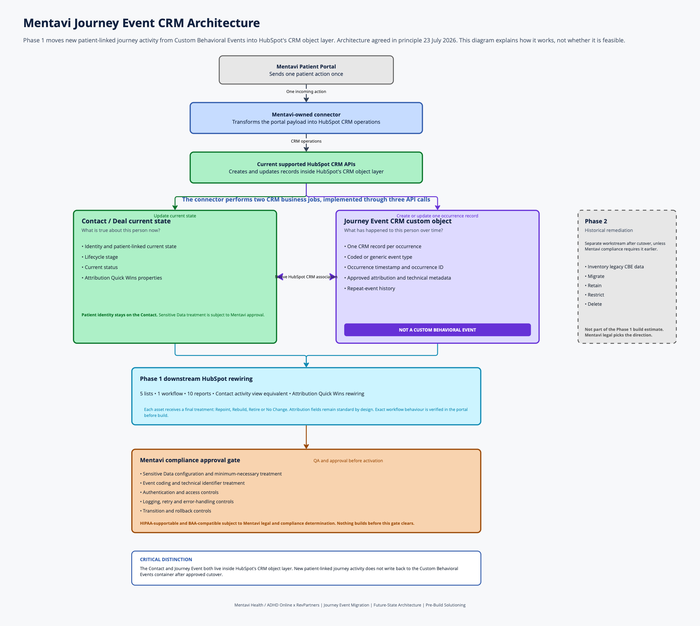
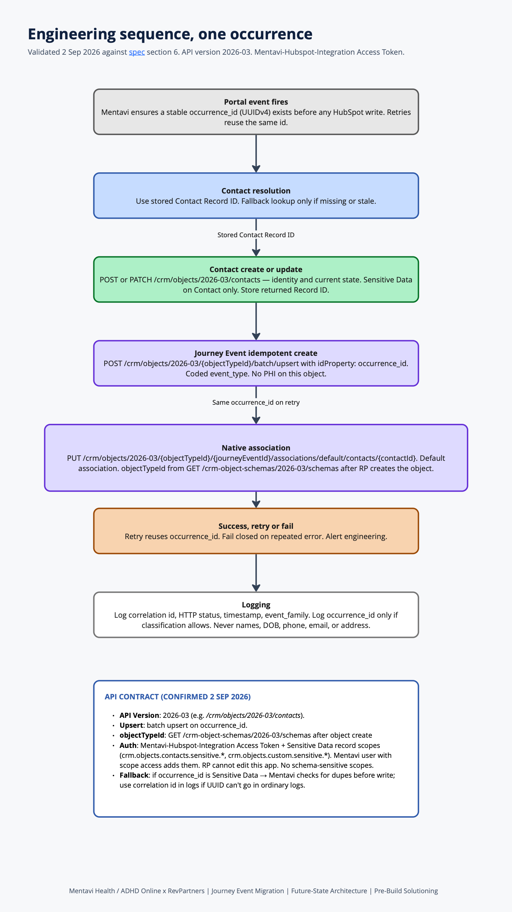

Mentavi compliance and legal
Sections 1, 4, 5, 6, and 8. Approve architecture, Contact matching, Sensitive Data flags, and Option A vs B. A written yes in section 1 is the build gate.
RevPartners, a Walker Sands company
ADHD Online
Technical specification
Replace Mentavi’s Custom Behavioral Event write path with CRM-native Journey Event records so patient-linked data lands only in HubSpot’s Sensitive Data-capable CRM layer.
This specification is for Mentavi compliance and legal, Mentavi engineering, and RevPartners. Each audience has a job below. It describes a HIPAA-supportable architecture on HubSpot. It is not legal advice and not a certification. Mentavi owns the compliance determination.
The event type mapping table is in section 6.
Sections 1, 4, 5, 6, and 8. Approve architecture, Contact matching, Sensitive Data flags, and Option A vs B. A written yes in section 1 is the build gate.
Sections 3, 4, and 6, including the mapping table. Build the connector from the three CRM writes, matching method, and API contract.
Sections 5, 7, 9, and 10. HubSpot build and QA begin after Mentavi compliance sign-off.
01. Executive
Mentavi’s patient portal writes lifecycle journey data into HubSpot Custom Behavioral Events (CBEs). Custom Behavioral Events are not expressly included in HubSpot’s Sensitive Data Covered Services. The live New User Journey event currently carries patient names, date of birth, and phone in plain text. That write path is not HIPAA-supportable.
Replace all Custom Behavioral Event writes with CRM-native records on HubSpot’s 2026-03 CRM Object APIs. The Journey Event is a CRM custom object. After cutover, records associate natively. No reversible patient identifier is stored as a property on the Journey Event.
One patient action. Mentavi ensures a stable occurrence_id exists before send.
Resolves the stored Contact Record ID. Three CRM writes. No events API.
Contact / Deal properties plus one Journey Event record per occurrence. Current GA version: 2026-03.
occurrence_id, and non-sensitive technical metadata.occurrence_id stays a standard unique property (required for HubSpot-enforced upsert) or is classified Sensitive Data (Mentavi must de-dupe before the write).HubSpot’s BAA covers the platform when Mentavi is a covered entity or business associate. Mentavi’s current legal status with HubSpot is for Mentavi to confirm with counsel. This specification does not determine that status.
A written yes from Mentavi legal or compliance is the build gate. Email is enough.
Record who approved, their role, the date, and that they reviewed this specification (2 September 2026). Verbal-only does not count until that written confirmation follows.
02. Current state
The live Mentavi connector posts to HubSpot Custom Behavioral Events. The current contract is the outbound HubSpot interfaces, 56 analytics event strings, and the New User Journey event in portal 21221632.
| Item | Current value |
|---|---|
| Endpoint | POST https://api.hubapi.com/events/v3/send |
| Auth | Existing private app Mentavi-Hubspot-Integration (Development → Legacy Apps), Access Token. Confirmed 11 August 2026. Mentavi adds Sensitive Data scopes before integration testing (section 6). RevPartners cannot edit scopes on this app. |
| Identifiers | userId / clientId primary, patientId secondary. Email is present on every documented outbound family. |
| Repeat events | Any event can repeat technically. Mapping-table “Repeat? = No” means not expected in normal business use. |
| Retries | Built in. Mentavi confirmed retries resend the original payload. Mentavi can generate a stable occurrence_id. |
| Test environment | Mentavi UAT available. HubSpot sandboxes cannot validate Sensitive Data. Live portal 21221632 is the HubSpot acceptance environment. |
| Live event | New User Journey: pe21221632_user_journey_event. Record source for created contacts = Custom Events. |
Source: Mentavi files dated 6 August 2026 (messageBody.ts, hubspotPortalEvents.ts). Seven values in PortalEventType. Seven outbound interfaces. That is eight live families: Patient Address Update is on the enum and has a validation body, with no matching outbound interface. Demographics Updated has an outbound interface, with no enum value and no validation body. Chris confirmed on 11 August they are two separate live events, not one process.
| # | Family | Interface | Enum | Validation body |
|---|---|---|---|---|
| 1 | User Journey | HubSpotUserJourneyEvent | UserJourneyEvent | UserJourneyBody |
| 2 | Account Verified | HubSpotAccountVerifiedEvent | AccountVerifiedEvent | AccountVerifiedBody |
| 3 | User Purchase | HubSpotUserPurchaseEvent | UserPurchaseEvent | UserPurchaseBody |
| 4 | Patient Address Update | None | PatientAddressUpdateEvent | PatientAddressUpdateBody |
| 5 | User Event | HubSpotUserEvent | UserEvent | UserEventBody |
| 6 | Marketing Consent | HubSpotMarketingConsentEvent | MarketingConsentEvent | MarketingConsentBody |
| 7 | User Purchase Detail | HubSpotUserPurchaseDetailEvent | UserPurchaseDetailEvent | UserPurchaseDetailEventBody |
| 8 | Demographics Updated | HubSpotDemographicsUpdatedEvent | None | None |
56 values in AnalyticsEvents. Many are clinically descriptive (initialMedMgmt_initiated, teleTherapy_initiated, coaching_initiated, diagnostic_reevaluation_*). Eleven require coded mapping. See section 6. Original clinical strings are not stored on the Journey Event.
About 50 properties on the HubSpot “Show properties” panel. PHI that belongs on Contact only in the future state:
patient_first_name, patient_last_name, patient_preferred_name, patient_dobclient_first_name, client_last_name, client_preferred_name, client_dobclient_phone_numberGeographic fields stay on both objects: Journey Event holds state at time of event; Contact holds current state. user_pk and patient_type move to Contact only. analytics is replaced by coded event_type; the original string is not stored.
Names, date of birth, and phone appear on the live HubSpot event. They are not present in every copy of the connector payloads reviewed for this specification. They are treated as data sent today: they move to Contact Sensitive Data and never land on Journey Event. Confirm against the live event property list during QA.
Custom Behavioral Events auto-capture UTMs. CRM custom objects do not. The 6 August connector files (messageBody.ts, hubspotPortalEvents.ts) send no UTM fields on any event family. After cutover, Mentavi must capture UTMs in the portal and pass them on the Journey Event write. That is a required Mentavi engineering build item — not optional. The event-path UTM copy workflow depends on it.
Browser, device, geo, page, and element metadata are also lost unless Mentavi explicitly sends them. This specification requires UTMs on Journey Event only where AQW attribution needs them.
Inventory from the NUJ “Used in” panel (13 July 2026). Filter-level audit completed in portal 21221632 on 2 September 2026 — see section 7.
Lists (5). 1.2 PQL Lifecycle Stage Inclusion List. Active AA Segment. General Newsletter List. AA Discount Segment. Privacy & Consent: visited site but no selection made.
Workflow (1). Playbook: Ops | Copy UTM Parameters to GTM Campaigns / Sources / Content / Term [Event Path]. Currently off in the portal.
Reports (10). Including ADT Clinician Referrals, labelled “disregard.” It still gets a decision: Retire. Rebuild count of active reports is 9 unless audit finds a consumer.
03. Architecture

POST or PATCH /crm/objects/2026-03/contacts. Sensitive Data: names, DOB, phone, patient_type, address fields. Standard: lifecyclestage, attribution, current state. Store the returned Record ID.
POST /crm/objects/2026-03/{objectTypeId}/batch/upsert with idProperty=occurrence_id. Coded event_type, occurred_at, UTMs, product metadata. No patient identifiers on this object.
PUT the default association Journey Event → Contact using the stored Record ID. See section 6 for the documented URL.
The connector changes endpoints, payload shape, PHI placement, coded types, occurrence_id, Contact Record ID storage, association create, and Sensitive Data scopes. Mentavi engineering time is separate from the HubSpot hours in section 10.
| Component | Owner | Notes |
|---|---|---|
| Integration / connector | Mentavi (Joel / Chris) | Payload restructure, occurrence_id, Contact Record ID storage, Sensitive Data scopes on the existing Access Token |
| Private app and scopes | Mentavi | Add Sensitive Data scopes on Mentavi-Hubspot-Integration. Requires a Mentavi user who can edit that app — RevPartners users in 21221632 cannot open the Scopes tab on this app. |
| Custom object and properties | RP creates the object and standard properties. Mentavi Super Admin creates Sensitive Data properties in the UI. | Classification is permanent. Sensitive Data properties cannot be unique. Sensitive Data settings and SD property create require Super Admin; RevPartners is not Super Admin in this portal. |
| 5 lists, 1 workflow, 10 reports | RP | Repoint, rebuild, or retire |
| Coded event mapping | RP proposes, Mentavi compliance approves | Section 6 |
| Contact matching method | RP recommends, Mentavi legal decides | Section 4 |
| HubSpot QA | RP | Synthetic records only, live portal as acceptance env |
| Integration QA | Mentavi | From Mentavi UAT into portal 21221632 test records |
| Compliance sign-off | Mentavi legal / compliance | Gate before any HubSpot build |
Chris confirmed 11 August 2026: the live credential is the Access Token on the existing private app Mentavi-Hubspot-Integration, under Development → Legacy Apps. Keep this token. Add Sensitive Data scopes before integration testing.
A Mentavi user who can edit Mentavi-Hubspot-Integration adds the scopes below. RevPartners users cannot edit this app: HubSpot shows “You can’t edit this app’s scopes, because this app has scopes you don’t have access to.” That is a portal permission gate, not a connector design choice.
crm.objects.contacts.sensitive.read / crm.objects.contacts.sensitive.write (picker may show the .v2 names used by the 2026-03 APIs)crm.objects.custom.sensitive.read / crm.objects.custom.sensitive.write (same)Those scopes cover Sensitive Data record read/write. Schema scopes for object build: crm.schemas.custom.read / crm.schemas.custom.write. There are no schema-level Sensitive Data scopes — only record scopes and standard schema read/write.
Sensitive Data property definitions: created in the HubSpot UI by a Mentavi Super Admin after Sensitive Data settings are enabled. This is the costed build path for portal 21221632. HubSpot’s Properties API can create sensitive definitions when the caller has object sensitive.write, but RevPartners cannot add scopes to Mentavi-Hubspot-Integration and cannot open Sensitive Data settings in this portal, so RP cannot execute or verify an API create path here.
A Mentavi Super Admin must confirm Health/Medical Data and the HIPAA covered-entity setting in portal 21221632 before build. Enabling Sensitive Data is irreversible. See section 8.
04. Identity
/crm/objects/2026-03/contacts with identity data.user_pk, clientId, patientId, names, DOB, phone, or address.Why: it is HubSpot’s native record identifier, minimum-necessary, and it avoids resending direct identifiers on every occurrence. It also sidesteps HubSpot’s hard constraint: Sensitive Data properties cannot enforce unique values. A Sensitive Data user_pk cannot be the unique Contact key.
| Method | Sensitivity | Uniqueness | API behavior | Risk |
|---|---|---|---|---|
| Contact Record ID (recommended) | HubSpot’s native record id. Whether it is a HIPAA identifier is Mentavi legal’s call, not a technical fact. | Unique by design | Association target directly | Merges require a one-time re-lookup |
| HIPAA identifier | Unique in HubSpot | idProperty=email at write time; do not store on Journey Event | Sent on every call; easy to leak into logs | |
user_pk | Depends on derivation; counsel decides | Unique if standard. Cannot be unique if Sensitive Data | idProperty if configured unique | If PHI, finished as a matching key |
patientId / clientId | Likely PHI | Same unique-vs-sensitive trap | Same as user_pk | Same as user_pk |
This specification recommends Contact Record ID, with the alternatives above. Mentavi legal chooses the matching method.
Primary pattern. Mentavi ensures one stable occurrence_id (UUIDv4 or equivalent) exists before the Journey Event write. Never derived from a patient value. Stored as a unique standard property on Journey Event. Retries reuse the same occurrence_id. HubSpot’s documented upsert is batch upsert on that unique property, so a retry updates rather than duplicates.
Fallback, only if legal classifies occurrence_id as Sensitive Data. HubSpot cannot enforce uniqueness on a Sensitive Data property. Mentavi then checks for an existing row (or consults its own sent-events store) before the write. The architecture still works. HubSpot just stops being the duplicate lock. Compliance decides the classification.
A UUID is not automatically non-PHI. Mentavi legal decides. If occurrence_id cannot go in ordinary logs, Mentavi logs a separate correlation id (status, timestamp, event family, that correlation id). The UUID still goes to HubSpot. It does not go to Datadog / error text.
These are two properties. They are not the same field.
occurrence_iddisplay_label, written by the integration as [coded event_type] | [occurred_at]event_type, occurred_at, event_familyA formatted display string is not a safe unique key. Two events of the same type can share a timestamp second. UUIDv4 does not.
| Scenario | Handling |
|---|---|
| Retry | Same occurrence_id, batch upsert, no duplicate. If legal classifies occurrence_id Sensitive Data, Mentavi de-dupes before the write instead. |
| Second legitimate occurrence | New occurrence_id, new record |
| Contact merge | Stored Record ID goes stale. Controlled one-time lookup and re-store. Not the normal path. |
| Contact not found | 404 → one-time fallback lookup (email unless legal forbids it) → re-store ID → associate. Email is not stored on the Journey Event. |
| Failed Contact write | Skip Journey Event create. Retry the same approved Contact payload inside Mentavi infrastructure. Logs: correlation id (or occurrence_id only if classification allows), status. No names, DOB, phone, email, or address in logs. |
| Failed Journey Event write | Retry with same occurrence_id. Upsert is safe. |
| Failed association | Retry. Record exists but is orphaned until association succeeds. |
05. Schema
journey_event. API paths use the plural journey_events.display_labeloccurrence_id (standard, unique)| Label | Internal | Type | Required | Classification | Why it exists | Source |
|---|---|---|---|---|---|---|
| Occurrence ID | occurrence_id | Single-line text (unique) | Yes | Standard (unique). SD fallback: §4. | Idempotency key | Mentavi ensures it exists before the Journey Event write |
| Display label | display_label | Single-line text | Yes | No | Primary display: event_type | occurred_at | Composed by Mentavi |
| Event Type | event_type | Single-line text | Yes | No | Coded type. Replaces analytics. Original string not stored. | analytics, mapped |
| Occurred At | occurred_at | DateTime | Yes | No | When the action happened | occurredAt |
| Event Family | event_family | Dropdown | Yes | No | Which integration family sent this | PortalEventType |
| Client State | client_state | Single-line text | No | No (geographic snapshot) | State at time of event | client_state |
| Client State Full | client_state_full | Single-line text | No | No | State at time of event | client_state_full |
| Patient State | patient_state | Single-line text | No | No (geographic snapshot) | State at time of event | patient_state |
| Patient State Full | patient_state_full | Single-line text | No | No | State at time of event | patient_state_full |
| Contract ID | contract_id | Single-line text | No | No | Purchase reference | contract_id |
| Product ID | product_id | Single-line text | No | No | Purchase detail | product_id |
| Product Name | product_name | Single-line text | No | No | Purchase detail | product_name |
| Product Price ID | product_price_id | Single-line text | No | No | Purchase detail | product_price_id |
| Product Price | product_price | Single-line text | No | No | Purchase detail | product_price |
| Product Paid Price | product_paid_price | Single-line text | No | No | Purchase detail | product_paid_price |
| UTM Campaign | utm_campaign | Single-line text | No | Standard | AQW attribution | utm_campaign |
| UTM Content | utm_content | Single-line text | No | No | AQW attribution | utm_content |
| UTM Medium | utm_medium | Single-line text | No | No | AQW attribution | utm_medium |
| UTM Source | utm_source | Single-line text | No | No | AQW attribution | utm_source |
| UTM Term | utm_term | Single-line text | No | No | AQW attribution | utm_term |
| Marketing Email Consent | accepted_email_marketing | Boolean | No | No | Consent state at time of event | accepted_email_marketing |
| Marketing SMS Consent | accepted_sms_marketing | Boolean | No | No | Consent state at time of event | accepted_sms_marketing |
| Test record flag | is_test_record | Boolean | No | No | Live-portal QA suppression | QA only |
No names (patient or client). No preferred names. No DOB. No phone. No email. No user_pk, clientId, or patientId. No street address, city, country, or postal code. All of that lives on the Contact only. Those event records are already linked to a contact that has that information.
email is a default HubSpot Contact property used at create / fallback lookup (not listed below). Proposed classification: Mentavi compliance confirms. An existing standard property cannot be converted to Sensitive Data later. If a field already exists as standard and must become Sensitive Data, create a new internal name. Tyler’s parallel property remediation covers overlaps.
| Property | Type | Proposed classification | Exists today | Current sensitivity | New internal name needed? | Tyler dependency | Source |
|---|---|---|---|---|---|---|---|
patient_first_name | Text | Sensitive Data | Confirm in portal | Confirm | If it exists as standard, yes | Yes if it already exists | User Journey |
patient_last_name | Text | Sensitive Data | Confirm in portal | Confirm | If it exists as standard, yes | Yes if it already exists | User Journey |
patient_preferred_name | Text | Sensitive Data | Confirm in portal | Confirm | If it exists as standard, yes | Yes if it already exists | User Journey |
patient_dob | Date | Sensitive Data | Confirm in portal | Confirm | If it exists as standard, yes | Yes if it already exists | User Journey |
client_first_name | Text | Sensitive Data | Confirm in portal | Confirm | If it exists as standard, yes | Yes if it already exists | User Journey |
client_last_name | Text | Sensitive Data | Confirm in portal | Confirm | If it exists as standard, yes | Yes if it already exists | User Journey |
client_preferred_name | Text | Sensitive Data | Confirm in portal | Confirm | If it exists as standard, yes | Yes if it already exists | User Journey |
client_dob | Date | Sensitive Data | Confirm in portal | Confirm | If it exists as standard, yes | Yes if it already exists | User Journey |
client_phone_number | Text | Sensitive Data | Confirm in portal | Confirm | If it exists as standard, yes | Yes if it already exists | User Journey, User Event, Marketing Consent |
patient_type | Dropdown | Sensitive Data | Confirm in portal | Confirm | If it exists as standard, yes | Yes if it already exists | User Journey, Patient Address Update |
patient_state / patient_state_full | Text | Standard | Confirm in portal | Confirm | No if already standard | No | User Journey, Patient Address Update, Demographics Updated |
client_state / client_state_full | Text | Standard | Confirm in portal | Confirm | No if already standard | No | User Journey |
address (street) | Text | Sensitive Data | HubSpot default address | Confirm | If default is standard and must be sensitive, new name | Yes if converting default | User Event streetAddress; Patient Address Update patientAddress1 |
address2 | Text | Sensitive Data | HubSpot default | Confirm | Same rule | Yes if converting default | Patient Address Update patientAddress2 |
city | Text | Sensitive Data | HubSpot default | Confirm | Same rule | Yes if converting default | User Event; Patient Address Update patientCity |
state | Text | Standard | HubSpot default | Standard | No | No | User Event; Patient Address Update patientState |
country | Text | Standard | HubSpot default | Standard | No | No | User Event |
zip | Text | Sensitive Data | HubSpot default | Confirm | Same rule as address | Yes if converting default | User Event postalCode; Patient Address Update patientZip |
lifecyclestage | Dropdown (HubSpot default) | Standard | Yes | Standard | No. Internal name is one word. | No | Existing. Confirm stage values in 21221632. |
is_test_record | Boolean | Standard | No | — | Create new | No | QA only |
Sensitive Data properties: unique values are not allowed. Classification cannot be changed later. Calculation, rollup, property-sync, and HubSpot-user properties cannot hold Sensitive Data. Attribution properties remain standard by design. Exact workflow behaviour is verified in the portal before build.
Sensitive Data property definitions are created in the HubSpot UI by a Mentavi Super Admin. That is the costed path for this project. RP creates standard Journey Event properties and the custom object; Mentavi Super Admin creates Contact Sensitive Data properties and confirms field-level access. QA writes and reads back Sensitive Data values on /crm/objects/2026-03/.
Every field Mentavi currently sends gets one home. Destination is proposed. Mentavi compliance confirms classification. Identifiers used only to find the Contact are not stored on Journey Event.
| Family | Source field | Destination | Target property | Proposed classification | If dropped, why |
|---|---|---|---|---|---|
| All | email | Contact (match / create only) | email | HubSpot default; HIPAA identifier | Never stored on Journey Event |
| All with analytics | analytics | Journey Event | coded event_type | Standard | Original string is not stored |
| Most | userPk / user_pk | Not stored | — | — | Used only if legal picks it as a match key. Relationship is the association. |
| User Journey | client / patient names, DOB, phone | Contact | matching Contact properties above | Sensitive Data | |
| User Journey | clientState, patientState, *_full | Contact (current) and Journey Event (snapshot) | client_state, patient_state, full variants | Standard | |
| User Journey | patientType | Contact | patient_type | Sensitive Data | |
| Account Verified | userPk, email | Contact match only / not stored on JE | — | — | Occurrence is the Journey Event row |
| User Purchase | contractId | Journey Event | contract_id | Standard | |
| Patient Address Update | patientAddress1 | Contact | address or new sensitive name | Sensitive Data | |
| Patient Address Update | patientAddress2 | Contact | address2 or new sensitive name | Sensitive Data | |
| Patient Address Update | patientCity | Contact | city or new sensitive name | Sensitive Data | |
| Patient Address Update | patientZip | Contact | zip or new sensitive name | Sensitive Data | |
| Patient Address Update | patientState | Contact current + JE snapshot | patient_state | Standard | |
| Patient Address Update | patientType | Contact | patient_type | Sensitive Data | |
| Patient Address Update | patientId | Not stored on Journey Event | — | — | Match-time only if legal requires it. Do not persist on the occurrence. |
| User Event | phoneNumber, firstName, lastName, street, city, postal | Contact | phone / name / address fields | Sensitive Data | |
| User Event | clientId | Not stored on Journey Event | — | — | Same as user_pk |
| User Event | state, country | Contact + JE snapshot | state / country | Standard | |
| Marketing Consent | acceptedEmailMarketing, acceptedSMSMarketing | Journey Event snapshot; Contact current consent if Mentavi already writes it | accepted_email_marketing, accepted_sms_marketing | Standard | |
| Marketing Consent | client_phone_number | Contact | client_phone_number | Sensitive Data | |
| User Purchase Detail | product id / name / prices | Journey Event | product_* | Standard | |
| Demographics Updated | patient_id | Not stored on Journey Event | — | — | Match-time only |
| Demographics Updated | patient_state, patient_state_full | Contact current + JE snapshot | patient_state, patient_state_full | Standard |
UTM / GTM copy from Contact to Deal must use standard properties only. Attribution fields stay standard by design. Exact workflow behaviour is verified in the portal before build. Tyler’s parallel Contact property remediation runs separately.
06. Mapping
event_type stores the value in the Proposed column. The original analytics string is not stored on the Journey Event. If the original string does not name a medical service or procedure, keep it. Only recode events that name specific clinical services.
Option A. Collapse clinical events to generic service_initiated / service_purchased. Most restrictive. Loses sub-type unless Mentavi adds a separate coded service_category dictionary.
Option B (recommended). Distinct opaque codes that preserve reportability without naming the service (service_type_a_initiated vs service_type_b_initiated). Mentavi holds the lookup. Follow-up and re-evaluation stay distinct because they are different occurrence classes, not just different service names.
The table below is Option B. Option A codes are not for the integration until compliance says so.
No rows match. Clear the search or turn off REVIEW only.
| Current analytics value | Proposed coded type | Proposed keep / REVIEW | Repeat? |
|---|---|---|---|
initialMedMgmt_initiated | service_type_a_initiated | REVIEW | Yes |
followUpMedMgmt_initiated | service_type_a_followup_initiated | REVIEW | Yes |
teleTherapy_initiated | service_type_b_initiated | REVIEW | Yes |
coaching_initiated | service_type_c_initiated | REVIEW | Yes |
medicalTreatmentReEvaluation_initiated | service_type_d_initiated | REVIEW | Yes |
initialMedMgmt_purchased | service_type_a_purchased | REVIEW | Yes |
followUpMedMgmt_purchased | service_type_a_followup_purchased | REVIEW | Yes |
teleTherapy_purchased | service_type_b_purchased | REVIEW | Yes |
coaching_purchased | service_type_c_purchased | REVIEW | Yes |
medicalTreatmentReEvaluation_purchased | service_type_d_purchased | REVIEW | Yes |
diagnostic_reevaluation_pre_purchase_info_page_view | assessment_type_e_viewed | REVIEW | Yes |
account_verified | account_verified | Proposed keep | No |
banner_clicked | banner_clicked | Proposed keep | Yes |
services_offered_clicked | services_offered_clicked | Proposed keep | Yes |
account_signup_wellness_d2c | account_signup_wellness_d2c | Proposed keep | No |
account_signup_wellness_b2b | account_signup_wellness_b2b | Proposed keep | No |
account_signup_assessment_d2c | account_signup_assessment_d2c | Proposed keep | No |
account_signup_assessment_b2b | account_signup_assessment_b2b | Proposed keep | No |
account_created_no_cta | account_created_no_cta | Proposed keep | No |
account_created_wellness_d2c | account_created_wellness_d2c | Proposed keep | No |
account_created_wellness_b2b | account_created_wellness_b2b | Proposed keep | No |
account_created_assessment_d2c | account_created_assessment_d2c | Proposed keep | No |
account_created_assessment_b2b | account_created_assessment_b2b | Proposed keep | No |
wellness_subscription_initiated_d2c | wellness_subscription_initiated_d2c | Proposed keep | No |
wellness_subscription_initiated_b2b | wellness_subscription_initiated_b2b | Proposed keep | No |
wellness_subscription_purchased_d2c | wellness_subscription_purchased_d2c | Proposed keep | No |
wellness_subscription_redeemed_b2b | wellness_subscription_redeemed_b2b | Proposed keep | No |
wellness_snapshot_started | wellness_snapshot_started | Proposed keep | Yes |
wellness_snapshot_completed | wellness_snapshot_completed | Proposed keep | Yes |
wellness_snapshot_report_viewed | wellness_snapshot_report_viewed | Proposed keep | Yes |
account_completed_wellness_d2c | account_completed_wellness_d2c | Proposed keep | No |
account_completed_wellness_b2b | account_completed_wellness_b2b | Proposed keep | No |
account_completed_assessment_d2c_adult | account_completed_assessment_d2c_adult | Proposed keep | No |
account_completed_assessment_b2b_adult | account_completed_assessment_b2b_adult | Proposed keep | No |
account_completed_assessment_no_cta_adult | account_completed_assessment_no_cta_adult | Proposed keep | No |
account_completed_assessment_d2c_dependent | account_completed_assessment_d2c_dependent | Proposed keep | No |
account_completed_assessment_b2b_dependent | account_completed_assessment_b2b_dependent | Proposed keep | No |
account_completed_assessment_no_cta_dependent | account_completed_assessment_no_cta_dependent | Proposed keep | No |
smart_assessment_pre_purchase_page_view | smart_assessment_pre_purchase_page_view | Proposed keep | Yes |
smart_assessment_pre_redeem_page_view | smart_assessment_pre_redeem_page_view | Proposed keep | Yes |
smart_assessment_purchased | smart_assessment_purchased | Proposed keep | No |
smart_assessment_purchased_payment_plan | smart_assessment_purchased_payment_plan | Proposed keep | No |
smart_assessment_redeemed | smart_assessment_redeemed | Proposed keep | No |
smart_assessment_continued | smart_assessment_continued | Proposed keep | Yes |
smart_assessment_submitted | smart_assessment_submitted | Proposed keep | No |
smart_assessment_report_viewed | smart_assessment_report_viewed | Proposed keep | Yes |
user_consent_shown | user_consent_shown | Proposed keep | Yes |
user_consent_accepted | user_consent_accepted | Proposed keep | No |
appointment_statement_downloaded | appointment_statement_downloaded | Proposed keep | Yes |
after_visit_summary_downloaded | after_visit_summary_downloaded | Proposed keep | Yes |
patient_address_update_initiated | patient_address_update_initiated | Proposed keep | Yes |
patient_address_update_completed | patient_address_update_completed | Proposed keep | Yes |
patient_address_update_submitted | patient_address_update_submitted | Proposed keep | Yes |
marketing_communication_consents_accepted | marketing_communication_consents_accepted | Proposed keep | No |
marketing_communication_consents_declined | marketing_communication_consents_declined | Proposed keep | No |
communication_preferences_opened | communication_preferences_opened | Proposed keep | Yes |
11 rows flagged REVIEW. 56 rows mapped from the current analytics taxonomy. If Mentavi later adds strings, they join this table before go-live. Repeat purchases and appointments must stay independently reportable, which is why Option B keeps types distinct. All “Proposed keep” rows still need Mentavi compliance confirmation.

occurrence_id before the Journey Event write. After object create, GET /crm-object-schemas/2026-03/schemas for objectTypeId. Upsert: batch upsert on occurrence_id. Open the live frame.Base URL: https://api.hubapi.com. Pin 2026-03 — HubSpot’s current generally available (GA) CRM API, released 30 March 2026. All object URLs use /crm/objects/2026-03/. QA proves write + read-back on every Sensitive Data property.
Docs used as canon:
GET /crm-object-schemas/2026-03/schemas. Find Journey Event. Copy objectTypeId (form 2-…) and fullyQualifiedName (form p21221632_journey_event). Use either in the object URLs below. Retrieve this id after RP creates the object.
crm.objects.contacts.read / crm.objects.contacts.writecrm.objects.contacts.sensitive.read / crm.objects.contacts.sensitive.write (picker may show .v2)crm.objects.custom.read / crm.objects.custom.writecrm.objects.custom.sensitive.read / crm.objects.custom.sensitive.write (picker may show .v2)crm.schemas.custom.read (to retrieve objectTypeId). Schema write is RP’s build, not Joel’s connector.crm.objects.deals.read / crm.objects.deals.write only if the connector writes Deal propertiesJourney Event properties in this specification are standard unless Mentavi compliance reclassifies occurrence_id.
Batch upsert on unique property occurrence_id.
| Scenario | Handling | In logs |
|---|---|---|
| Contact write fails | Retry the same approved payload inside Mentavi infrastructure. Skip Journey Event create. | Correlation id (or occurrence_id only if classification allows), status, timestamp, event_family |
| Journey Event write fails | Retry same occurrence_id through batch upsert. | Same |
| Association fails | Retry. Orphan until success. | Same |
| 401 / 403 | Alert. Do not put PHI in the error body or ticket. | Status only |
| Contact not found after merge | One-time fallback lookup. The lookup value is not logged. | Correlation id, status |
PHI stays out of logs through Mentavi middleware design. Verified in QA test 13.
| Aspect | Current (CBE) | Future (CRM object) |
|---|---|---|
| Endpoint | events/v3/send | /crm/objects/2026-03/… |
| Calls per event | 1 | 3 (Contact, Journey Event upsert, association) |
| PHI on occurrence | Yes | No |
| Identifier on occurrence | email, user_pk | occurrence_id only |
| Idempotency | None | Batch upsert on unique occurrence_id |
| UTM capture | Auto | Explicit. Portal must send. |
| Auth | Mentavi-Hubspot-Integration Access Token | Same token, plus Sensitive Data scopes added by a user who can edit the app |
| Sensitive Data | Not supported on this path | Required on Contact; optional on Journey Event pending classification |
07. Downstream
16 named assets depend on the current Custom Behavioral Event. Classification B: architecture confirmed, material migration. Lists, the workflow, reports, and the activity view do not survive unchanged. They are rebuilt or repointed onto Journey Event / Contact properties.
All 16 assets opened in portal 21221632. Current logic below is from live filters, workflow definitions, and report titles. Hours are working bands inside the section 10 total.
Action vocabulary: Repoint = same logic, new data source. Rebuild = new trigger or query. Retire = archive. No change = not event-triggered, or static segment with no CBE dependency.
Custom-object workflows enroll on record creation or on a property “is known,” with re-enrollment when that property changes. Workaround properties on Contact must be standard — calculated, rollup, and property-sync fields cannot hold Sensitive Data.
Default for this inventory: the one live workflow is event-path. Rebuild it to “Journey Event created” + UTM is known. That does not need association-change detection. Lists and reports that filter “Contact has associated Journey Event” use association filters, not association-change triggers.
Fallback, only if an opened asset actually needs “just associated”: standard Contact property latest_journey_event_date, written by the integration at association time. Workflows and lists watch that property. Build it only if an opened asset needs it.
| # | Asset | Current logic (audited) | Action | Future logic | Owner | Hours | QA test |
|---|---|---|---|---|---|---|---|
| 1 | 1.2 PQL Lifecycle Stage Inclusion List | CBE: New User Journey completed AND Email Address Verified completed (67,660 contacts) | Repoint | Associated Journey Event of coded types nuj_* AND account_verified. No latest_journey_event_date needed — association filter. |
RP | 1–2h | Known PQL contacts still in; test-flagged contacts out |
| 2 | Active AA Segment | Static segment — no filters (37,077 contacts). Manual membership. | No change | Not CBE-driven. Refresh membership rules with strategist if AA definition changes; no Journey Event repoint required. | RP | 0.5h | Sample contacts unchanged after cutover |
| 3 | General Newsletter List | OR: 3 segment memberships, email opt-in, OR five CBE completions (NUJ, Med Mgmt Appt, Assessment Signed, Email Verified, User Purchase). AND marketing contact. Excludes unengaged segments. | Repoint | Replace each CBE arm with associated Journey Event of the matching coded type. Keep segment-membership and consent arms unchanged. | RP | 2–3h | Consented contacts remain; unconsented stay out |
| 4 | AA Discount Segment | Not active in Welcome Series workflow AND not in Snapshot Exclusion AND NUJ CBE completed AND User Purchase CBE not completed (88,184 contacts) | Repoint | Swap NUJ / User Purchase CBE filters for Journey Event association filters on coded purchase types. | RP | 1–2h | Discount-eligible sample still qualifies |
| 5 | Privacy & Consent: visited site but no selection made | Four OR groups on Privacy & Tracking Consent (no response) segment plus session, email click, ads, or NUJ CBE (150,364 contacts) | Repoint | Replace Group 4 NUJ CBE arm with Marketing Consent Journey Events + associated NUJ coded types. Consent segment arms unchanged. | RP | 2h | No-selection contacts still isolated; consented contacts not trapped here |
| Asset | Current trigger | Action | Future trigger / actions | Owner | Hours | QA test |
|---|---|---|---|---|---|---|
| Playbook: Ops | Copy UTM … [Event Path] | Off. Enrolls on New User Journey CBE (6-37146369). Copies hs_utm_* from event to Contact utm_* if event_attribution_locked is false; sets lock after copy. |
Rebuild | Enroll when Journey Event created with coded type nuj_* and utm_source is known. Copy UTM properties from Journey Event to Contact GTM fields. Same lock logic. Mentavi must send UTMs — see section 2. |
RP | 2–3h | New Journey Event with UTMs copies to Contact GTM. Empty UTMs do not overwrite. Test records excluded. |
Duplicate event-path workflow 1841942125: Retire — same name, older copy, also off. Form-path sibling 1841267053 enrolls on form submit, not CBE — no change for Journey Event cutover.
Copy Property still cannot reference Sensitive Data. That is why UTMs stay standard. Contact-to-Deal GTM copy (1841341314) exists and is off — rewired in AQW pass below.
Attribution Quality Workstream build is paused. These nine ⚙️Playbook: Ops workflows are off in portal 21221632. None enroll today. Rewire after lists, the event-path UTM workflow, and reports are clean on Journey Event. All use standard Contact / Deal properties only.
| Workflow | ID | Trigger | Action on cutover | Hours | QA |
|---|---|---|---|---|---|
| GTM Sources Mapping — Offline | 1841340746 | Filter criteria (offline Original Source) | Repoint if offline source fields unchanged; verify mapping table | 0.5–1h | Offline contacts get correct GTM Summary |
| 1-Self Reported Attribution Mapping | 1841341315 | Filter criteria | Repoint on self-reported source property change | 0.5–1h | Self-reported value maps to category |
| 2-Self Reported | Sources → Categories | 1841341197 | Filter criteria | Repoint — second step of self-reported chain | 0.5h | Category populated |
| 3-Self Reported | Contact ➝ Deal | 1841341196 | Filter criteria | Repoint — copy self-reported fields Contact → Deal (standard only) | 0.5–1h | Deal inherits self-reported fields |
| UTM Parameters — GTM Medium/Motion | 1841341198 | Filter criteria on utm_source | Repoint — depends on UTMs populated (Mentavi build item) | 0.5–1h | Channel maps to GTM medium/motion |
| Copy UTM … (form path) | 1841267053 | Form submission | No change — not CBE / Journey Event | 0h | Form UTMs still copy after cutover |
| Copy UTM … [Event Path] | 1841942132 | NUJ CBE | Rebuild — see workflow table above | 2–3h | Test 16 |
| Copy UTM … [Event Path] (duplicate) | 1841942125 | Duplicate | Retire | 0.25h | No enrollment; archive |
| GTM Sources: Contact → Deal | 1841341314 | Filter criteria | Repoint — copy GTM fields Contact → Deal after UTM chain populates Contact | 0.5–1h | Deal GTM matches Contact |
| # | Asset | Current source | Action | Future source | Owner | Hours | QA test |
|---|---|---|---|---|---|---|---|
| 1 | New User Journey Report (draft: all, custom event based) Clone | CBE — NUJ events | Retire | Duplicate draft. Fold into canonical NUJ report (#6). | RP | 0.5h | No dashboard consumer |
| 2 | Journey Report (pop up form capture) | Form submissions | No change | Title implies popup form capture, not CBE. Verify once in UI; expected to survive cutover unchanged. | RP | 0.5h | Popup captures still count |
| 3 | Journey Report (popup form submissions) | Form submissions | No change | Same as #2 | RP | 0.5h | Submissions still count |
| 4 | ADT Clinician Referrals (disregard) | n/a | Retire | Labelled disregard. Archive after confirming no live consumer. | RP | 0.5h | No live workflow or dashboard still points here |
| 5 | Santa Barbara New User Journey Report | CBE — NUJ + geo filter | Rebuild | Journey Event object with Santa Barbara filter (state/region from audited report definition). | RP | 2–3h | Geographic filter matches old report on dated sample |
| 6 | New User Journey Report (draft: all, custom event based) | CBE — NUJ events | Rebuild | Canonical NUJ report on Journey Event. Retire clones (#1, #7). | RP | 2–3h | Synthetic events appear; test flag excluded |
| 7 | New User Journey Report (Draft) | CBE — NUJ events | Retire | Redirect to canonical report (#6) | RP | 0.5h | Draft retired |
| 8 | Journey Funnel Chart: New User Journey to Purchase (since 11-20-24) | CBE funnel | Rebuild | Journey Event funnel: signup → assessment → purchase coded types. Highest-effort report. | RP | 3–5h | Stage conversion on synthetic sequence matches expected order |
| 9 | Journey Report: New User Journey to Purchase (since 11-20-24) | CBE | Rebuild | Journey Event, same date fence | RP | 2–3h | Purchase occurrences independently countable |
| 10 | Journey Report: user purchase (draft) | CBE — User Purchase | Rebuild | User Purchase + User Purchase Detail Journey Events. Repeat purchases = separate records. | RP | 2–3h | Two purchases, two rows, one Contact |
| Item | Action | Notes |
|---|---|---|
| Contact activity / timeline equivalent | Rebuild | Associated Journey Event records on the Contact. Exact CBE UI is not required. Operational one-to-many history is. |
| Record Source | Document | Today: Custom Events. After cutover: CRM API. Screenshot before cutover so AQW emptiness is not misattributed. |
| Lifecycle stages | Repoint if event-triggered | If stages move on Contact properties the portal writes, they survive. If CBE-triggered, rebuild on Journey Event create. |
| Consent and suppression | Repoint | Marketing Consent family. Continuity-of-care / partner-referral sends are not pause-and-hope marketing. |
| AQW Playbook workflows (9) | Rewire after cutover prep | Named in section 7 AQW table. All off today. Stay off until event-path UTM workflow and reports are clean. |
| Repeat purchases and appointments | Keep | One Journey Event per occurrence. A properties-only model is not in scope. |
08. Controls
In portal 21221632, RevPartners users are not Super Admins. Opening Settings > Security redirects to the user’s own account security page, not the portal Sensitive Data tab. HubSpot requires Super Admin to turn on or edit those settings.
A Mentavi Super Admin opens Settings > Security > Sensitive Data and confirms both of these before any Sensitive Data property is created:
Once on, those settings are permanent. Categories cannot be removed. Until a Super Admin confirms this page, RevPartners cannot create Sensitive Data properties or verify that the setting is already enabled.
event_family. Log occurrence_id only if Mentavi classifies it as safe for ordinary logs. Never names, DOB, phone, email, address, user_pk, patientId.occurrence_id. An approved Contact retry may resend the same patient fields inside Mentavi infrastructure. That is allowed. PHI in logs is not.This document validates platform supportability. It is not legal advice. RP does not certify HIPAA compliance. HubSpot’s BAA covers the platform. Mentavi’s policies cover Mentavi’s use of it.
09. QA
Sensitive Data is unavailable in HubSpot sandboxes. Portal 21221632 is the HubSpot acceptance environment. Mentavi drives their side from UAT. A sandbox may be used for isolated non-sensitive logic. It is not the sign-off environment.
Live-portal controls: is_test_record on Contact and Journey Event. Lists, workflows, and reports exclude flagged records. Test records cannot enroll in live branches. Restricted property access during test. Named cleanup: who deletes test records, and when. Named owner for each test and each sign-off. Synthetic data only. No PHI in test payloads.
| # | Case | Expected result |
|---|---|---|
| 1 | Contact create | New Contact. Sensitive Data properties populated. Read-back confirms the value saved. |
| 2 | Contact update | Existing Contact updated. No duplicate. |
| 3 | Contact ID stored | Mentavi stores the returned Record ID. |
| 4 | Association | Journey Event linked to the correct Contact. |
| 5 | First occurrence | One Journey Event record. |
| 6 | Second legitimate occurrence | New record, different occurrence_id. |
| 7 | Retry | Same occurrence_id. No duplicate. Batch upsert updates. If occurrence_id is Sensitive Data, Mentavi’s pre-write check prevents the duplicate. |
| 8 | Missing / stale Contact ID | Fallback lookup succeeds. New ID stored. Not logged. |
| 9 | Failed Contact write | No Journey Event. Error without PHI. |
| 10 | Failed Journey Event write | Retry succeeds. No orphan duplicate. |
| 11 | Failed association | Retry associates. Orphan resolved. |
| 12 | Sensitive Data save | Write + read-back on 2026-03 confirms the value saved. |
| 13 | No PHI in logs | Inspect error output: correlation id (or occurrence_id only if classification allows), status, timestamp, event_family. No names, DOB, phone, email, address. |
| 14 | No CBE writes after cutover | Send a synthetic occurrence through the production-like CRM path. Count of New User Journey Custom Behavioral Event records does not increase. |
| 15 | Lists | All five return the approved membership. |
| 16 | Workflow | UTM copy fires on new Journey Event. No overwrite of blanks. |
| 17 | Reports | Active reports read Journey Event. Retired report has no consumers. |

Phase 1
Build and validate Journey Event writes. Cut new occurrences over. Define transition controls for anything still reading history.
Assumption, labeled: clean cutover. No historical backfill in this phase.
Phase 2
Migrate, retain, restrict, or delete historical Custom Behavioral Event data. Mentavi legal owns that decision.
Outside the HubSpot hours in section 10.
Steve said on 23 July to keep current writes going. Corey is taking this to Mentavi compliance. This specification does not treat as settled that current patient-linked writes continue, or that continuity-of-care / partner referral sends cannot be paused.
Mentavi compliance decides whether current patient-linked writes continue during Phase 1, and whether history-dependent automations may keep reading Custom Behavioral Event data. That changes the activation gate. It does not change the three-call architecture.
| Path A: history may keep feeding live automations during migration | Path B: historical remediation is an activation gate | |
|---|---|---|
| What happens | New writes go to Journey Event only. Lists / workflows that must see new activity are repointed first. Assets that only need historical CBE keep reading it until Phase 2. | No activation until Mentavi legal says how historical CBE is handled. New path can be built and QA’d against test records. Production cutover waits. |
| Sequence impact | Repoint event-triggered assets before flipping the portal URL. Property-triggered assets can follow. Dual-read window is explicit and dated. | Same HubSpot build. Go-live date slides by however long the Phase 2 decision takes. Hours in this specification do not include backfill. |
| Double-send risk | Suppression: a Contact who already received an occurrence-based send is excluded from the equivalent Journey Event enrollment (property or list membership). No parallel CBE and Journey Event writes. | Same suppression design, applied at the later activation date. |
| Pause window | AQW stays paused until lists, the UTM workflow, and dashboards are clean on the new object. Continuity-of-care and partner referral sends: Mentavi compliance decides whether they may keep reading historical CBE data. Inventory them during the asset pass. | Longer pause of anything that reads CBE, until legal picks migrate / retain / restrict / delete. |
events/v3/send, starts CRM writes. No parallel path.Condition for retiring the old path: zero new CBE writes on the production-like CRM path, all event-triggered assets reading Journey Event, suppression verified, Mentavi sign-off on tests 14–17. Default rollback is fail closed: pause affected writes and alert Mentavi engineering. A time-boxed return to events/v3/send happens only if Mentavi compliance pre-approves that fallback in writing. It is never automatic. Journey Event records from a failed attempt are orphans; RP deletes by is_test_record and by occurrence_id list. Who triggers rollback: Mentavi engineering lead. Criteria: Sensitive Data not persisting, association failure rate, or PHI in logs.
10. Build plan
HubSpot build starts after Mentavi compliance approves the architecture.
| # | Item | What changes | Owner | Depends on | Hours | Sequence | QA test |
|---|---|---|---|---|---|---|---|
| 1 | Sensitive Data settings | Confirm / enable Health/Medical Data and the HIPAA covered-entity boxes. Super Admin only — RevPartners cannot open this page in 21221632. | Mentavi Super Admin | Compliance sign-off | 0.5h | First | Settings visible as enabled to a Super Admin |
| 2 | Custom object | Journey Event. Display display_label. Unique occurrence_id. Association to Contact. Record card. | RP | 1 | 1h | Second | Object visible. Association type ID retrieved. |
| 3 | Journey Event properties (standard) | Section 5 map, including UTMs and is_test_record | RP | 2 | 2h | Third | Types correct. occurrence_id unique. |
| 4 | Journey Event properties (sensitive) | Only if compliance reclassifies any JE field. Super Admin. Unique is not available if sensitive. | Mentavi Super Admin | 1, 2 | 0–1h | With 3 | Flag set. Cannot be unique if sensitive. |
| 5 | Contact Sensitive Data properties | Section 5 Contact map. Mentavi Super Admin creates them in the UI. Set field-level access. PHI checkbox where applicable. Not via API for this project. | Mentavi Super Admin (RP assists) | 1 | 2h | Parallel with 2 | Restricted access. Write + read-back on 2026-03. |
| 6 | Record card / timeline | event_type, occurred_at, event_family on the card. Associated records on Contact. | RP | 3 | 1–2h | After properties | Visible on a test Contact |
| 7 | Private app scopes | Mentavi user adds Sensitive Data scopes on Mentavi-Hubspot-Integration (section 6). RevPartners cannot edit Scopes on this app. | Mentavi | 1 | 0.5h | Before integration testing | App scopes match section 6 |
| 8 | 5 lists | Repoint / no change per section 7 audit | RP | 2, 3 | 5–9h | After object | Tests 15 |
| 9 | UTM workflow | Event-path → Journey Event created (1841942132). Retire duplicate 1841942125. | RP | 2, 3 | 2–3h | After lists start | Test 16 |
| 10 | 10 reports | Rebuild 6 CBE reports. Retire 3 drafts/ADT. No change 2 form reports. | RP | 2, 3 | 10–16h | After workflow | Test 17 |
| 11 | AQW rewiring | 9 Playbook workflows (section 7). All off. Rewire UTM chain, self-reported, offline, Contact→Deal after row 10. | RP + strategist | 8, 9, 10 | 4–7h | Last HubSpot logic | No live enrollment until clean |
| 12 | Cutover + rollback | Sequence, suppression, cleanup, rollback trigger | RP + Mentavi | All above | 2h | Last | Documented. Tests 14–17 signed. |
Sum of rows: 31 hours low, 47 hours high. Classification B: architecture confirmed, material migration. Portal audit completed 2 September 2026.
Mentavi engineering (connector) is separate. Phase 2 is separate.
occurrence_id (UUIDv4) exists before the Journey Event write; reuse it on retryoccurrence_id as Sensitive Data: HubSpot cannot unique-upsert. Mentavi checks for an existing row (or a sent-events store) before the write.event_type mappingNot estimated. Decision artifact only. Check in portal 21221632: how many CBE records, date range, types, whether they export with Contact associations, and which live assets still read them. That last question sizes the problem. If nothing live reads old records, the transition is smaller than it currently appears.
| Option | Old records | Live automations | Rough size |
|---|---|---|---|
| Migrate | ETL into Journey Event | Repointed to new data | Medium–large. CBEs do not export with a Contact association column. |
| Retain in place | Stay in CBE, no new writes | History-dependent assets keep working | Small |
| Restrict | Lock down CBE, read-only | Same as retain, with access control | Small |
| Delete | Remove CBE records | Anything still reading history breaks | Medium, needs backup |
None of these block this specification. All block go-live.
lifecyclestage values in 21221632 (example payloads use placeholders)